← 本轮 smoke 总览traex/DeepSeek-V4.1-Flash · 0032
vision-agent · 256×144 · 4.0 FPS · 20 帧 · 状态 complete · 输出 tokens 50275
原始任务Static locked-off single-shot with fixed frame throughout filmed with constant framerate in real-time. The scene shows a realistic scientific demonstration. The scene only contains the described setup and actions. A light-colored wooden tabletop with two pipes at the edges. The blue and the yellow tennis ball roll out of the pipes and collide with the same speed.
当前保存结果
已保存候选与代码修改
这里按时间展示外部捕获的候选，每份均可单独播放。保存新版本不等于完成视觉检查；下方工具证据记录实际看过的图。
候选 01 · 2026-11-08T23:46:38.410148+00:00 · 点开播放与检查图
inspection.png
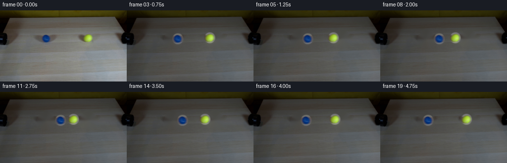
transition_check.png
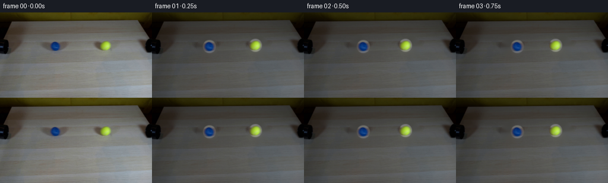
代码变化
--- 上一保存版本
+++ 本次保存版本
@@ -0,0 +1,114 @@
+from pathlib import Path
+
+import cv2
+import numpy as np
+from PIL import Image
+
+import artifact_io
+
+
+ROOT = Path(__file__).resolve().parent
+WIDTH, HEIGHT, FRAME_COUNT, FPS = 256, 144, 20, 4
+
+BLUE_START = np.array([93.0, 56.5], dtype=np.float32)
+YELLOW_START = np.array([177.5, 55.5], dtype=np.float32)
+BALL_RADIUS = 10.0
+CONTACT_FRAME = 10.0
+
+
+def make_clean_plate(frame):
+ """Remove the two balls and their contact shadows from the fixed camera view."""
+ mask = np.zeros((HEIGHT, WIDTH), dtype=np.uint8)
+ cv2.ellipse(mask, (93, 58), (18, 17), 0, 0, 360, 255, -1)
+ cv2.ellipse(mask, (178, 57), (18, 17), 0, 0, 360, 255, -1)
+ return cv2.inpaint(frame, mask, 4, cv2.INPAINT_TELEA)
+
+
+def make_sprite(frame, center, radius=11.0):
+ """Cut a softly antialiased ball sprite while retaining its real texture."""
+ cx, cy = center
+ half = 14
+ x0, y0 = int(round(cx)) - half, int(round(cy)) - half
+ crop = frame[y0:y0 + half * 2 + 1, x0:x0 + half * 2 + 1].astype(np.float32)
+
+ yy, xx = np.mgrid[:crop.shape[0], :crop.shape[1]]
+ distance = np.hypot(xx - (cx - x0), yy - (cy - y0))
+ alpha = np.clip((radius - distance) / 1.35 + 0.5, 0.0, 1.0)
+ alpha = alpha * alpha * (3.0 - 2.0 * alpha)
+ return crop, alpha.astype(np.float32)
+
+
+def composite_sprite(canvas, rgb, matte, position):
+ half = rgb.shape[0] // 2
+ left, top = int(round(position[0])) - half, int(round(position[1])) - half
+ shift_x = float(position[0] - round(position[0]))
+ shift_y = float(position[1] - round(position[1]))
+ matrix = np.array([[1.0, 0.0, shift_x], [0.0, 1.0, shift_y]], dtype=np.float32)
+
+ warped_rgb = cv2.warpAffine(
+ rgb, matrix, (rgb.shape[1], rgb.shape[0]),
+ flags=cv2.INTER_CUBIC, borderMode=cv2.BORDER_REFLECT_101
+ )
+ warped_alpha = cv2.warpAffine(
+ matte, matrix, (matte.shape[1], matte.shape[0]),
+ flags=cv2.INTER_LINEAR, borderMode=cv2.BORDER_CONSTANT, borderValue=0
+ )
+
+ x1, y1 = max(0, left), max(0, top)
+ x2 = min(WIDTH, left + warped_rgb.shape[1])
+ y2 = min(HEIGHT, top + warped_rgb.shape[0])
+ sx1, sy1 = x1 - left, y1 - top
+ sx2, sy2 = sx1 + (x2 - x1), sy1 + (y2 - y1)
+
+ target = canvas[y1:y2, x1:x2]
+ source = warped_rgb[sy1:sy2, sx1:sx2]
+ a = warped_alpha[sy1:sy2, sx1:sx2, None]
+ canvas[y1:y2, x1:x2] = source * a + target * (1.0 - a)
+
+
+def add_contact_shadow(canvas, position):
+ """A soft, directionally consistent shadow directly beneath each ball."""
+ layer = np.zeros_like(canvas)
+ center = (int(round(position[0] + 1.0)), int(round(position[1] + 7.0)))
+ cv2.ellipse(layer, center, (10, 4), 0, 0, 360, (28, 27, 24), -1)
+ layer = cv2.GaussianBlur(layer, (0, 0), 2.2)
+ canvas[:] = canvas * 0.80 + layer * 0.20
+
+
+def ball_positions(frame_index):
+ travel_to_contact = (np.linalg.norm(YELLOW_START - BLUE_START) - 2.0 * BALL_RADIUS) / 2.0
+ speed = travel_to_contact / CONTACT_FRAME
+ if frame_index <= CONTACT_FRAME:
+ offset = speed * frame_index
+ else:
+ offset = speed * (2.0 * CONTACT_FRAME - frame_index)
+
+ blue = BLUE_START + np.array([offset, 0.0], dtype=np.float32)
+ yellow = YELLOW_START - np.array([offset, 0.0], dtype=np.float32)
+ return blue, yellow
+
+
+def generate():
+ original = np.asarray(Image.open(ROOT / "first_frame.png").convert("RGB"), dtype=np.uint8)
+ assert original.shape == (HEIGHT, WIDTH, 3)
+
+ clean = make_clean_plate(original)
+ blue_sprite = make_sprite(original, BLUE_START)
+ yellow_sprite = make_sprite(original, YELLOW_START)
+
+ frames = np.empty((FRAME_COUNT, HEIGHT, WIDTH, 3), dtype=np.uint8)
+ frames[0] = original
+ for index in range(1, FRAME_COUNT):
+ blue, yellow = ball_positions(float(index))
+ canvas = clean.astype(np.float32)
+ add_contact_shadow(canvas, blue)
+ add_contact_shadow(canvas, yellow)
+ composite_sprite(canvas, *blue_sprite, blue)
+ composite_sprite(canvas, *yellow_sprite, yellow)
+ frames[index] = np.clip(canvas + 0.5, 0, 255).astype(np.uint8)
+
+ artifact_io.save(frames, ROOT)
+
+
+if __name__ == "__main__":
+ generate()
可观测工具行为
命令 1 · 2026-11-08T23:43:12.324557+00:00/bin/bash -c "pwd && rg --files -g '"'!*.git*'"' | sort"
exit 0 命令 2 · 2026-11-08T23:43:12.500360+00:00/bin/bash -c "sed -n '1,240p' prompt.txt"
exit 0 命令 3 · 2026-11-08T23:43:12.821974+00:00/bin/bash -c "sed -n '1,280p' GENERATION_RULES.md"
exit 0 命令 4 · 2026-11-08T23:43:12.921054+00:00/bin/bash -c 'file first_frame.png && identify first_frame.png 2>/dev/null || true && ls -lah'
exit 0 命令 5 · 2026-11-08T23:43:20.321666+00:00/bin/bash -c "sed -n '1,260p' artifact_io.py"
exit 0 命令 6 · 2026-11-08T23:43:21.060616+00:00/bin/bash -c "python - <<'PY'
from PIL import Image
import numpy as np
im=Image.open('first_frame.png').convert('RGB')
a=np.array(im)
print(im.size, a.shape, a.dtype)
for p in [(0,0),(128,72),(128,20),(256,72),(100,50),(175,53),(5,50),(250,50)]:
x,y=p; print(p, a[y,x])
PY"exit 1 命令 7 · 2026-11-08T23:43:21.409319+00:00/bin/bash -c "python - <<'PY'
import cv2, numpy as np
im=cv2.imread('first_frame.png')
print('cv2',cv2.__version__, im.shape)
PY"exit 0 命令 8 · 2026-11-08T23:43:37.853383+00:00/bin/bash -c "python - <<'PY'
from PIL import Image
im=Image.open('first_frame.png')
for name,box in [('blue',(75,38,116,72)),('yellow',(158,38,198,73)),('leftpipe',(0,42,26,76)),('rightpipe',(238,42,256,76)),('scene',(0,0,256,144))]:
im.crop(box).resize(((box[2]-box[0])*6,(box[3]-box[1])*6)).save(f'.tmp/{name}.png')
PY"exit 0 命令 9 · 2026-11-08T23:43:45.544555+00:00/bin/bash -c "python - <<'PY'
import cv2, numpy as np
im=cv2.imread('first_frame.png')[:,:,::-1].astype(float)
# Print key background rows and columns
for y in [0,10,17,20,25,30,35,40,50,60,70,80,90,100,120,143]:
vals=im[y,[0,20,50,100,128,180,220,240,255]]
print('row',y, vals.astype(int).tolist())
PY"exit 0 命令 10 · 2026-11-08T23:44:18.237766+00:00/bin/bash -c "python - <<'PY'
import cv2, numpy as np
im=cv2.imread('first_frame.png')
hsv=cv2.cvtColor(im,cv2.COLOR_BGR2HSV)
# blue bgr strong blue: B high vs R, G
blue=((im[:,:,0]>70)&(im[:,:,0]>im[:,:,2]*1.35)&(im[:,:,0]>im[:,:,1]*1.05)).astype(np.uint8)
yellow=((im[:,:,1]>100)&(im[:,:,2]>80)&(im[:,:,1]>im[:,:,0]*1.25)).astype(np.uint8)
for name,m in [('blue',blue),('yellow',yellow)]:
ys,xs=np.where(m)
print(name,'n',len(xs),'bbox',xs.min(),xs.max(),ys.min(),ys.max(),'centroid',xs.mean(),ys.mean())
print('colors mean', im[ys,xs].mean(axis=0), 'rgb',im[ys,xs][:,:3].mean(axis=0)[::-1])
# distances extrema
for y in range(ys.min(),ys.max()+1):
xx=np.where(m[y])[0]
if len(xx): print(y,xx.min(),xx.max(),len(xx))
PY"exit 0 命令 11 · 2026-11-08T23:44:23.340524+00:00/bin/bash -c "python - <<'PY'
import cv2, numpy as np
im=cv2.imread('first_frame.png')
hsv=cv2.cvtColor(im,cv2.COLOR_BGR2HSV)
# print hsv for patches
for name,(x0,y0,x1,y1) in [('blue',(80,44,106,70)),('yellow',(163,43,192,70)),('bg',(120,45,158,70)),('pipeL',(0,45,20,70)),('pipeR',(238,45,256,70))]:
p=hsv[y0:y1,x0:x1]
print(name,'H range',p[:,:,0].min(),p[:,:,0].max(),'mean',p.reshape(-1,3).mean(0))
PY"exit 0 命令 12 · 2026-11-08T23:44:27.928269+00:00/bin/bash -c "python - <<'PY'
import cv2,numpy as np
im=cv2.imread('first_frame.png')
hsv=cv2.cvtColor(im,cv2.COLOR_BGR2HSV)
for name,box in [('blue',(75,42,112,72)),('yellow',(158,42,198,72))]:
x0,y0,x1,y1=box
print(name)
for y in range(y0,y1,2):
print(y, ' '.join(f'{hsv[y,x,0]:3}' for x in range(x0,x1,3)))
PY"exit 0 命令 13 · 2026-11-08T23:44:32.922907+00:00/bin/bash -c "python - <<'PY'
import cv2,numpy as np
im=cv2.imread('first_frame.png')
for name,(cx,cy,r) in [('blue',(93,56.5,9.5)),('yellow',(177.5,55.5,10))]:
yy,xx=np.mgrid[:144,:256]
d=np.sqrt((xx-cx)**2+(yy-cy)**2)
for rr in [7,8,9,10,11]:
m=(d<rr)
print(name,rr,im[m].mean(0)[::-1])
PY"exit 0 命令 14 · 2026-11-08T23:45:06.671669+00:00/bin/bash -c "python - <<'PY'
import cv2, numpy as np
im=cv2.imread('first_frame.png').astype(np.float32)
def replace(dst, src, box):
x0,y0,x1,y1=box
w=x1-x0
a=im[y0:y1,x0:x1]
b=im[y0:y1,src:src+w]
# estimate offset using left/right/top/bottom bands, avoiding core
bands=np.zeros((y1-y0,w),bool); k=4
bands[:k,:]=1; bands[-k:,:]=1; bands[:, :k]=1; bands[:,-k:]=1
off=np.median((a-b)[bands],axis=0)
print('offset',off)
b=b+off
yy,xx=np.mgrid[y0:y1,x0:x1]
edge=np.minimum.reduce([xx-x0,x1-1-xx,yy-y0,y1-1-yy])
alpha=np.clip(edge/7.0,0,1)
alpha=alpha*alpha*(3-2*alpha)
out=im.copy(); out[y0:y1,x0:x1]=a*(1-alpha[...,None])+b*alpha[...,None]
return out
out=replace(im,25,(70,40,128,77))
out=replace(out,120,(156,39,207,76))
cv2.imwrite('.tmp/clean_shift.png',np.clip(out,0,255).astype(np.uint8))
# inpaint alt
mask=np.zeros(im.shape[:2],np.uint8)
cv2.rectangle(mask,(72,40),(126,77),255,-1)
cv2.rectangle(mask,(158,39),(207,76),255,-1)
inp=cv2.inpaint(im.astype(np.uint8),mask,5,cv2.INPAINT_TELEA)
cv2.imwrite('.tmp/clean_inpaint.png',inp)
PY"exit 0 命令 15 · 2026-11-08T23:45:18.432826+00:00/bin/bash -c "python - <<'PY'
import cv2,numpy as np
im=cv2.imread('first_frame.png').astype(np.float32)
# openCV box filtering with edge replicate
def clean(box, sw):
x0,y0,x1,y1=box; w=x1-x0
src=im[y0:y1,sw:sw+w]
out=im.copy(); yy,xx=np.mgrid[y0:y1,x0:x1]
edge=np.minimum.reduce([xx-x0,x1-1-xx,yy-y0,y1-1-yy])
alpha=np.clip(edge/10.0,0,1); alpha=alpha*alpha*(3-2*alpha)
out[y0:y1,x0:x1]=im[y0:y1,x0:x1]*(1-alpha[...,None])+src*alpha[...,None]
return out
for a,b in [((70,39,128,77),25),((155,38,208,77),120)]: im=clean(a,b)
cv2.imwrite('.tmp/clean_nooffset.png',np.clip(im,0,255).astype(np.uint8))
PY"exit 0 命令 16 · 2026-11-08T23:45:25.839641+00:00/bin/bash -c "python - <<'PY'
import cv2,numpy as np
im=cv2.imread('first_frame.png').astype(np.float32)
for x in [70,100,120,130,140,150,160,180,200,220]:
p=im[35:75,x]
print(x, np.median(p,axis=0).astype(int)[::-1], p.mean(0).astype(int)[::-1])
PY"exit 0 命令 17 · 2026-11-08T23:45:30.529907+00:00/bin/bash -c "python - <<'PY'
import cv2,numpy as np
im=cv2.imread('first_frame.png')
for y in [35,40,45,50,55,60,65,70,75]:
print('y',y,'x70-140',np.median(im[y,70:140],axis=0).astype(int)[::-1], 'x160-210',np.median(im[y,160:210],axis=0).astype(int)[::-1])
PY"exit 0 命令 18 · 2026-11-08T23:46:27.124181+00:00/bin/bash -c 'python generate.py'
exit 1 命令 19 · 2026-11-08T23:46:37.058399+00:00/bin/bash -c 'python generate.py'
exit 0 命令 20 · 2026-11-08T23:47:03.879759+00:00/bin/bash -c "python - <<'PY'
import cv2,numpy as np
im=cv2.imread('first_frame.png')
# exact ball silhouettes by pixel colors / handcrafted ellipses
# estimate clean background vertical profile from central stripe and x190+ right table
for x in [93,178]:
print('column',x)
for y in range(45,72):
print(y,im[y,x][::-1])
PY"exit 0 命令 21 · 2026-11-08T23:47:07.933968+00:00/bin/bash -c "python - <<'PY'
import cv2,numpy as np
im=cv2.imread('first_frame.png')
for x in [90,95,172,182]:
print('x',x, 'y45-67', [tuple(im[y,x][::-1]) for y in range(45,68)])
PY"exit 0 命令 22 · 2026-11-08T23:47:17.388364+00:00/bin/bash -c "python - <<'PY'
import cv2,numpy as np
im=cv2.imread('first_frame.png').astype(np.float32)
out=im.copy()
for box in [(74,42,114,80),(158,41,199,80)]:
x0,y0,x1,y1=box
for y in range(y0,y1):
t=(y-(y0-1))/((y1)-(y0-1))
# endpoints outside masked object
p0=im[y0-2,x0:x1]; p1=im[y1,x0:x1]
out[y,x0:x1]=p0*(1-t)+p1*t
# feather by replace only mask with smooth alpha
mask=np.zeros(im.shape[:2],np.float32)
cv2.ellipse(mask,((x0+x1)//2,(y0+y1)//2),((x1-x0)//2,(y1-y0)//2),0,0,360,1,-1)
mask=cv2.GaussianBlur(mask,(0,0),3)
out=mask[...,None]*out+(1-mask[...,None])*im
cv2.imwrite('.tmp/clean_vertical.png',np.clip(out,0,255).astype(np.uint8))
PY"exit 0 命令 23 · 2026-11-08T23:47:29.640964+00:00/bin/bash -c "python - <<'PY'
import cv2,numpy as np
im=cv2.imread('first_frame.png')
out=im.copy()
# seamless clone neighboring texture into ball regions
for box, srcbox in [((70,38,120,80),(22,38,72,80)),((156,38,206,80),(206,38,256,80))]:
x0,y0,x1,y1=box
sx0,sy0,sx1,sy1=srcbox
mask=np.zeros((sy1-sy0,sx1-sx0),np.uint8)
cv2.ellipse(mask,((x1-x0)//2,(y1-y0)//2),((x1-x0)//2-2,(y1-y0)//2-2),0,0,360,255,-1)
out=cv2.seamlessClone(im[sy0:sy1,sx0:sx1],out,mask,((x0+x1)//2,(y0+y1)//2),cv2.NORMAL_CLONE)
cv2.imwrite('.tmp/clean_seamless.png',out)
PY"exit 0 命令 24 · 2026-11-08T23:47:38.391639+00:00/bin/bash -c "python - <<'PY'
import cv2,numpy as np
im=cv2.imread('first_frame.png')
# Let cv2 inpaint patch small core, then use texture synthesis via repeated patch offsets
mask=np.zeros((144,256),np.uint8)
cv2.ellipse(mask,(93,57),(10,10),0,0,360,255,-1)
cv2.ellipse(mask,(178,56),(10,10),0,0,360,255,-1)
for rad in [3,5,8,12]:
out=cv2.inpaint(im,mask,rad,cv2.INPAINT_NS)
cv2.imwrite(f'.tmp/inpaint_ns_{rad}.png',out)
PY"exit 0 命令 25 · 2026-11-08T23:47:48.856364+00:00/bin/bash -c "python - <<'PY'
import cv2,numpy as np
im=cv2.imread('first_frame.png')
# shift nearby unoccluded patch to each ball location, blend with vertical gradient correction
out=im.astype(np.float32).copy()
for cx,cy,srcx in [(93,57,53),(178,56,198)]:
r=14; y0=cy-r; y1=cy+r+1; x0=cx-r; x1=cx+r+1
patch=im[y0:y1,srcx-r:srcx+r+1].astype(np.float32)
target=im[y0:y1,x0:x1].astype(np.float32)
yy,xx=np.mgrid[y0:y1,x0:x1]
d=np.hypot(xx-cx,yy-cy)
alpha=np.clip((13.5-d)/2.0,0,1); alpha=alpha*alpha*(3-2*alpha)
# low frequency offset estimate from annulus
ann=(d>12)&(d<16)
if ann.sum():
off=np.median((target-patch)[ann],axis=0)
patch+=off
out[y0:y1,x0:x1]=patch*alpha[...,None]+target*(1-alpha[...,None])
cv2.imwrite('.tmp/clean_shift2.png',np.clip(out,0,255).astype(np.uint8))
PY"exit 0 命令 26 · 2026-11-08T23:48:03.193931+00:00/bin/bash -c "python - <<'PY'
from PIL import Image
for name in ['clean_shift2','inpaint_ns_5','clean_seamless']:
im=Image.open(f'.tmp/{name}.png')
im.crop((50,30,220,85)).resize((1020,330)).save(f'.tmp/{name}_zoom.png')
PY"exit 0 命令 27 · 2026-11-08T23:48:12.861525+00:00/bin/bash -c "python - <<'PY'
import cv2,numpy as np
im=cv2.imread('first_frame.png').astype(np.float32)
out=im.copy()
# estimate each destination using same-row source patches. Use large source patches and per-row color matching.
for cx,cy,srcx in [(93,57,53),(178,56,198)]:
r=14; y0=cy-r; y1=cy+r+1; x0=cx-r; x1=cx+r+1
src=im[y0:y1,srcx-r:srcx+r+1].copy()
dst=im[y0:y1,x0:x1].copy()
yy,xx=np.mgrid[y0:y1,x0:x1]
d=np.hypot(xx-cx,yy-cy)
alpha=np.clip((13.8-d)/1.3,0,1); alpha=alpha*alpha*(3-2*alpha)
# match by rows based on clean columns outside ball in target
for iy,y in enumerate(range(y0,y1)):
valid=np.abs(xx[iy]-cx)>12
off=np.median((dst[iy]-src[iy])[valid],axis=0)
src[iy]+=off
# high-frequency preserve original outside
out[y0:y1,x0:x1]=src*alpha[...,None]+dst*(1-alpha[...,None])
cv2.imwrite('.tmp/clean_rows.png',np.clip(out,0,255).astype(np.uint8))
PY"exit 0 命令 28 · 2026-11-08T23:48:23.260017+00:00/bin/bash -c "python - <<'PY'
import cv2,numpy as np
im=cv2.imread('first_frame.png')
# use low-frequency background generated from row-wise fit. Smooth each row and interpolate ball horizontal spans.
out=im.astype(np.float32).copy()
for cx,cy in [(93,57),(178,56)]:
x0,x1=cx-12,cx+13; y0,y1=cy-11,cy+12
# estimate per-row baseline from nearby left and right at same row, fit linear
for y in range(y0,y1):
xl=np.arange(x0-8,x0-3); xr=np.arange(x1+3,x1+8)
p=np.r_[im[y,xl],im[y,xr]].astype(np.float32)
xx=np.r_[xl,xr].astype(np.float32)
coef=np.polyfit(xx,p,1)
xs=np.arange(x0,x1)
pred=np.polyval(coef,xs[:,None],)[:,None] # bug?
pred=np.stack([np.polyval(coef[:,c],xs) for c in range(3)],axis=1)
out[y,x0:x1]=pred
# soften boundaries
blur=cv2.GaussianBlur(out,(0,0),2)
mask=np.zeros(im.shape[:2],np.float32)
for cx,cy in [(93,57),(178,56)]: cv2.ellipse(mask,(cx,cy),(12,11),0,0,360,1,-1)
mask=cv2.GaussianBlur(mask,(0,0),2.5)[...,None]
out=blur*mask+im*(1-mask)
cv2.imwrite('.tmp/clean_rowsmooth.png',np.clip(out,0,255).astype(np.uint8))
PY"exit 0 命令 29 · 2026-11-08T23:48:30.932116+00:00/bin/bash -c "python - <<'PY'
from PIL import Image
for name in ['clean_rowsmooth','clean_rows','clean_seamless']:
im=Image.open(f'.tmp/{name}.png')
im.crop((50,30,220,85)).resize((1020,330)).save(f'.tmp/{name}_zoom.png')
PY"exit 0 命令 30 · 2026-11-08T23:48:40.197944+00:00/bin/bash -c "python - <<'PY'
import cv2,numpy as np
im=cv2.imread('first_frame.png')
# create dest via patch synthesis from right clean field using exact 31x31 patches centered at 220 and 235
out=im.astype(np.float32).copy()
for cx,cy,srcx in [(93,57,219),(178,56,233)]:
r=15; y0,y1=cy-r,cy+r+1; x0,x1=cx-r,cx+r+1
src=im[y0:y1,srcx-r:srcx+r+1].astype(np.float32)
yy,xx=np.mgrid[y0:y1,x0:x1]; d=np.hypot(xx-cx,yy-cy)
alpha=np.clip((13.5-d)/1.8,0,1); alpha=alpha*alpha*(3-2*alpha)
# color offset per row sampled edge pixels
for iy,y in enumerate(range(y0,y1)):
valid=(np.abs(xx[iy]-cx)>12)
if valid.any(): src[iy]+=np.median((im[y,x0:x1].astype(np.float32)-src[iy])[valid],axis=0)
out[y0:y1,x0:x1]=src*alpha[...,None]+im[y0:y1,x0:x1]*(1-alpha[...,None])
cv2.imwrite('.tmp/clean_rightpatch.png',np.clip(out,0,255).astype(np.uint8))
PY"exit 0 命令 31 · 2026-11-08T23:48:50.660813+00:00/bin/bash -c "python - <<'PY'
import cv2,numpy as np
im=cv2.imread('first_frame.png').astype(np.float32)
out=im.copy()
# Fill each sphere with median filtered background from same local region after deleting ball
for cx,cy in [(93,57),(178,56)]:
x0,x1=cx-14,cx+15; y0,y1=cy-14,cy+15
patch=im[y0:y1,x0:x1].copy()
# replace core with larger neighborhood median then blur heavily
med=cv2.medianBlur(im[y0-6:y1+6,x0-6:x1+6].astype(np.uint8),21).astype(np.float32)
med=med[6:-6,6:-6]
yy,xx=np.mgrid[y0:y1,x0:x1]; d=np.hypot(xx-cx,yy-cy)
a=np.clip((13.2-d)/1.5,0,1); a=a*a*(3-2*a)
out[y0:y1,x0:x1]=med*a[...,None]+patch*(1-a[...,None])
cv2.imwrite('.tmp/clean_median.png',np.clip(out,0,255).astype(np.uint8))
PY"exit 0 命令 32 · 2026-11-08T23:49:00.152583+00:00/bin/bash -c "python - <<'PY'
import cv2,numpy as np
im=cv2.imread('first_frame.png').astype(np.float32)
out=im.copy()
# Fit low order 2d polynomial per color channel to rows in an annulus, then fill.
for cx,cy in [(93,57),(178,56)]:
y0,y1=38,80; x0,x1=cx-24,cx+25
yy,xx=np.mgrid[y0:y1,x0:x1]
d=np.hypot(xx-cx,yy-cy)
mask=(d>12)&(d<23)
X=np.stack([np.ones(mask.sum()),xx[mask]-cx,(yy[mask]-cy),(xx[mask]-cx)**2,(yy[mask]-cy)**2,(xx[mask]-cx)*(yy[mask]-cy)],axis=1)
pred=np.zeros((y1-y0,x1-x0,3),np.float32)
full=np.stack([np.ones(xx.size),xx.ravel()-cx,yy.ravel()-cy,(xx.ravel()-cx)**2,(yy.ravel()-cy)**2,(xx.ravel()-cx)*(yy.ravel()-cy)],axis=1)
for c in range(3):
coef=np.linalg.lstsq(X,im[yy[mask],xx[mask],c],rcond=None)[0]
pred[:,:,c]=(full@coef).reshape(y1-y0,x1-x0)
a=np.clip((13.5-d)/1.5,0,1); a=a*a*(3-2*a)
out[y0:y1,x0:x1]=pred*a[...,None]+im[y0:y1,x0:x1]*(1-a[...,None])
cv2.imwrite('.tmp/clean_poly.png',np.clip(out,0,255).astype(np.uint8))
PY"exit 0 命令 33 · 2026-11-08T23:49:07.889365+00:00/bin/bash -c "python - <<'PY'
from PIL import Image
for name in ['clean_poly','clean_median','clean_rowsmooth']:
im=Image.open(f'.tmp/{name}.png')
im.crop((50,30,220,85)).resize((1020,330)).save(f'.tmp/{name}_zoom.png')
PY"exit 0 命令 34 · 2026-11-08T23:49:23.647150+00:00/bin/bash -c "python - <<'PY'
import cv2,numpy as np
im=cv2.imread('first_frame.png').astype(np.float32)
out=im.copy()
# masked low-pass: iterative normalized convolution (diffusion) over sphere holes
for cx,cy in [(93,57),(178,56)]:
y0,y1=39,79; x0,x1=cx-23,cx+24
patch=im[y0:y1,x0:x1].copy()
yy,xx=np.mgrid[y0:y1,x0:x1]; d=np.hypot(xx-cx,yy-cy)
hole=(d<13).astype(np.float32)
# blur only fill region, but with hole data zeroed
valid=1-hole
vals=patch*valid[...,None]
num=cv2.GaussianBlur(vals,(0,0),8)
den=cv2.GaussianBlur(valid,(0,0),8)[...,None]
fill=num/np.maximum(den,1e-5)
a=np.clip((13.2-d)/1.5,0,1); a=a*a*(3-2*a)
out[y0:y1,x0:x1]=fill*a[...,None]+patch*(1-a[...,None])
cv2.imwrite('.tmp/clean_diffuse.png',np.clip(out,0,255).astype(np.uint8))
PY"exit 0 命令 35 · 2026-11-08T23:49:33.861512+00:00/bin/bash -c "python - <<'PY'
import cv2,numpy as np
im=cv2.imread('first_frame.png').astype(np.float32)
out=im.copy()
for cx,cy in [(93,57),(178,56)]:
y0,y1=39,79; x0,x1=cx-23,cx+24
patch=im[y0:y1,x0:x1].copy(); yy,xx=np.mgrid[y0:y1,x0:x1]; d=np.hypot(xx-cx,yy-cy)
hole=(d<13).astype(np.float32); valid=1-hole
vals=patch*valid[...,None]
for sigma in [5,10,15]:
num=cv2.GaussianBlur(vals,(0,0),sigma); den=cv2.GaussianBlur(valid,(0,0),sigma)[...,None]
fill=num/np.maximum(den,1e-5)
if sigma==5: base=fill
else: base=base*0.7+fill*0.3
a=np.clip((13.2-d)/1.4,0,1); a=a*a*(3-2*a)
# add faint measured texture from a shifted annulus after color match
src=im[y0:y1,x0+32:x1+32]
src=src-src.mean((0,1))+base.mean((0,1))
out[y0:y1,x0:x1]=(base*0.82+src*0.18)*a[...,None]+patch*(1-a[...,None])
cv2.imwrite('.tmp/clean_diffuse_texture.png',np.clip(out,0,255).astype(np.uint8))
PY"exit 0 命令 36 · 2026-11-08T23:49:41.779525+00:00/bin/bash -c "python - <<'PY'
import cv2,numpy as np
im=cv2.imread('first_frame.png').astype(np.float32)
out=im.copy()
# fill only exact ball discs with vertical interpolation from top/bottom at each x
for cx,cy in [(93,57),(178,56)]:
y0,y1=39,79; x0,x1=cx-23,cx+24
patch=im[y0:y1,x0:x1].copy()
yy,xx=np.mgrid[y0:y1,x0:x1]; d=np.hypot(xx-cx,yy-cy)
for x in range(x0,x1):
col=im[y0:y1,x]
ys=np.arange(y0,y1)
valid=np.abs(ys-cy)>12
# linear fit y vs rgb near top and bottom, extrapolate/interp
for c in range(3):
coef=np.polyfit(ys[valid],col[valid,c],2)
col[:,c]=np.polyval(coef,ys)
patch[:,x-x0]=col
a=np.clip((13.0-d)/1.2,0,1); a=a*a*(3-2*a)
out[y0:y1,x0:x1]=patch*a[...,None]+im[y0:y1,x0:x1]*(1-a[...,None])
cv2.imwrite('.tmp/clean_columnfit.png',np.clip(out,0,255).astype(np.uint8))
PY"exit 0 命令 37 · 2026-11-08T23:49:48.544520+00:00/bin/bash -c "python - <<'PY'
from PIL import Image
for name in ['clean_columnfit','clean_diffuse_texture']:
im=Image.open(f'.tmp/{name}.png')
im.crop((50,30,220,85)).resize((1020,330)).save(f'.tmp/{name}_zoom.png')
PY"exit 0 命令 38 · 2026-11-08T23:49:57.007093+00:00/bin/bash -c "python - <<'PY'
import cv2,numpy as np
im=cv2.imread('first_frame.png').astype(np.float32)
out=im.copy()
# Poisson-like harmonic fill using iterative Jacobi on ball core, with boundary outside disk fixed.
for cx,cy in [(93,57),(178,56)]:
y0,y1=40,78; x0,x1=cx-22,cx+23
yy,xx=np.mgrid[y0:y1,x0:x1]; d=np.hypot(xx-cx,yy-cy); hole=d<12.5
p=im[y0:y1,x0:x1].copy()
for _ in range(300):
blur=(np.roll(p,1,0)+np.roll(p,-1,0)+np.roll(p,1,1)+np.roll(p,-1,1))/4
p[hole]=blur[hole]
a=np.clip((13-d)/1.2,0,1); a=a*a*(3-2*a)
out[y0:y1,x0:x1]=p*a[...,None]+im[y0:y1,x0:x1]*(1-a[...,None])
cv2.imwrite('.tmp/clean_harmonic.png',np.clip(out,0,255).astype(np.uint8))
PY"exit 0 命令 39 · 2026-11-08T23:50:05.781453+00:00/bin/bash -c "python - <<'PY'
from PIL import Image
for name in ['clean_harmonic']:
im=Image.open(f'.tmp/{name}.png')
im.crop((50,30,220,85)).resize((1020,330)).save(f'.tmp/{name}_zoom.png')
PY"exit 0 命令 40 · 2026-11-08T23:50:14.062281+00:00/bin/bash -c "python - <<'PY'
import cv2,numpy as np
im=cv2.imread('first_frame.png')
out=im.copy()
# Try moving clean patch from a bit lower on the same plank, preserving wood grain orientation.
for cx,cy,sy in [(93,57,91),(178,56,88)]:
r=15; x0,x1=cx-r,cx+r+1; y0,y1=cy-r,cy+r+1
src=im[sy-r:sy+r+1,x0:x1].astype(np.float32); dst=im[y0:y1,x0:x1].astype(np.float32)
yy,xx=np.mgrid[y0:y1,x0:x1]; d=np.hypot(xx-cx,yy-cy)
alpha=np.clip((13.3-d)/1.5,0,1); alpha=alpha*alpha*(3-2*alpha)
src+=np.median((dst-src)[(d>12)&(d<16)],axis=0)
out[y0:y1,x0:x1]=np.clip(src*alpha[...,None]+dst*(1-alpha[...,None]),0,255).astype(np.uint8)
cv2.imwrite('.tmp/clean_verticalpatch.png',out)
PY"exit 0 命令 41 · 2026-11-08T23:50:21.060222+00:00/bin/bash -c "python - <<'PY'
import cv2,numpy as np
im=cv2.imread('first_frame.png')
out=im.copy()
# Move right patch up 17 pixels; local wood grain is broad and this preserves texture.
for cx,cy,sy in [(93,57,40),(178,56,39)]:
r=15; x0,x1=cx-r,cx+r+1; y0,y1=cy-r,cy+r+1
src=im[sy-r:sy+r+1,x0:x1].astype(np.float32); dst=im[y0:y1,x0:x1].astype(np.float32)
yy,xx=np.mgrid[y0:y1,x0:x1]; d=np.hypot(xx-cx,yy-cy)
alpha=np.clip((13.3-d)/1.5,0,1); alpha=alpha*alpha*(3-2*alpha)
src+=np.median((dst-src)[(d>12)&(d<16)],axis=0)
out[y0:y1,x0:x1]=np.clip(src*alpha[...,None]+dst*(1-alpha[...,None]),0,255).astype(np.uint8)
cv2.imwrite('.tmp/clean_uppatch.png',out)
PY"exit 0 命令 42 · 2026-11-08T23:50:28.464080+00:00/bin/bash -c "python - <<'PY'
import cv2,numpy as np
im=cv2.imread('first_frame.png')
out=im.copy()
# Clone the entire plank band horizontally, which best preserves the horizontal grain.
for cx,cy,srcx in [(93,57,133),(178,56,118)]:
r=20; x0,x1=cx-r,cx+r+1; y0,y1=cy-r,cy+r+1
src=im[y0:y1,srcx-r:srcx+r+1].astype(np.float32); dst=im[y0:y1,x0:x1].astype(np.float32)
yy,xx=np.mgrid[y0:y1,x0:x1]; d=np.hypot(xx-cx,yy-cy)
alpha=np.clip((13.5-d)/1.3,0,1); alpha=alpha*alpha*(3-2*alpha)
# affine color correction from boundary annulus
mask=(d>13)&(d<18)
X=np.c_[src[mask],np.ones(mask.sum())]
Y=dst[mask]
# independent channels
for c in range(3):
coef=np.linalg.lstsq(np.c_[src[:,:,c].ravel(),np.ones(src[:,:,c].size)],dst[:,:,c].ravel(),rcond=None)[0]
src[:,:,c]=src[:,:,c]*coef[0]+coef[1]
out[y0:y1,x0:x1]=np.clip(src*alpha[...,None]+dst*(1-alpha[...,None]),0,255).astype(np.uint8)
cv2.imwrite('.tmp/clean_band.png',out)
PY"exit 0 命令 43 · 2026-11-08T23:50:35.767547+00:00/bin/bash -c "python - <<'PY'
from PIL import Image
for name in ['clean_band','clean_uppatch','clean_verticalpatch']:
im=Image.open(f'.tmp/{name}.png')
im.crop((50,30,220,85)).resize((1020,330)).save(f'.tmp/{name}_zoom.png')
PY"exit 0 命令 44 · 2026-11-08T23:50:44.613128+00:00/bin/bash -c "python - <<'PY'
import cv2,numpy as np
im=cv2.imread('first_frame.png').astype(np.float32)
# test wavelet-ish: fill with lowpass from right then add residual texture from same horizontal patch
out=im.copy()
for cx,cy,srcx in [(93,57,132),(178,56,118)]:
y0,y1=38,78; x0,x1=cx-22,cx+23
dst=im[y0:y1,x0:x1]; src=im[y0:y1,srcx-22:srcx+23]
# blur both to compare base
low_src=cv2.GaussianBlur(src,(0,0),5); low_dst=cv2.GaussianBlur(dst,(0,0),5)
base=low_dst + (src-low_src) * .5
yy,xx=np.mgrid[y0:y1,x0:x1]; d=np.hypot(xx-cx,yy-cy)
a=np.clip((13.2-d)/1.5,0,1); a=a*a*(3-2*a)
out[y0:y1,x0:x1]=base*a[...,None]+dst*(1-a[...,None])
cv2.imwrite('.tmp/clean_wavelet.png',np.clip(out,0,255).astype(np.uint8))
PY"exit 0 命令 45 · 2026-11-08T23:51:04.424660+00:00/bin/bash -c "python - <<'PY'
import cv2,numpy as np
im=cv2.imread('first_frame.png').astype(np.float32)
H,W=im.shape[:2]
mask_obj=np.zeros((H,W),bool)
for cx,cy in [(93,57),(178,56)]:
yy,xx=np.mgrid[:H,:W]; mask_obj |= np.hypot(xx-cx,yy-cy)<16
# Candidate centers in same band; boundaries of frame/pipes excluded
for label,(cx,cy) in [('blue',(93,57)),('yellow',(178,56))]:
r=13; y0,y1=cy-r,cy+r+1; x0,x1=cx-r,cx+r+1
target=im[y0:y1,x0:x1]
yy,xx=np.mgrid[y0:y1,x0:x1]; d=np.hypot(xx-cx,yy-cy)
ring=(d>=10.5)&(d<=13.5)
candidates=[]
for sy in range(43,70):
for sx in range(28,228):
if sx-r<0 or sx+r>=W or sy-r<0 or sy+r>=H: continue
sm=mask_obj[sy-r:sy+r+1,sx-r:sx+r+1]
if sm.any(): continue
source=im[sy-r:sy+r+1,sx-r:sx+r+1]
diff=source[ring]-target[ring]
score=np.mean(diff*diff)
candidates.append((score,sx,sy))
candidates.sort()
print(label,candidates[:10])
for rank,(score,sx,sy) in enumerate(candidates[:4]):
source=im[sy-r:sy+r+1,sx-r:sx+r+1]
# apply seamless clone using circular mask
smask=np.zeros((2*r+1,2*r+1),np.uint8)
cv2.circle(smask,(r,r),r-1,255,-1)
out=cv2.seamlessClone(source.astype(np.uint8),im.astype(np.uint8),smask,(cx,cy),cv2.NORMAL_CLONE)
cv2.imwrite(f'.tmp/{label}_best{rank}.png',out)
PY"exit 0 命令 46 · 2026-11-08T23:51:13.957386+00:00/bin/bash -c "python - <<'PY'
import cv2,numpy as np
im=cv2.imread('first_frame.png').astype(np.float32)
out=im.copy()
# matched-patch fill, with source selected outside both spheres, soft matte, and boundary color correction.
for cx,cy,sx,sy in [(93,57,64,57),(178,56,122,54)]:
r=13; y0,y1=cy-r,cy+r+1; x0,x1=cx-r,cx+r+1
dst=im[y0:y1,x0:x1]; src=im[sy-r:sy+r+1,sx-r:sx+r+1].copy()
yy,xx=np.mgrid[y0:y1,x0:x1]; d=np.hypot(xx-cx,yy-cy)
a=np.clip((12.8-d)/1.5,0,1); a=a*a*(3-2*a)
ring=(d>11)&(d<14)
off=np.median((dst-src)[ring],axis=0)
src+=off
out[y0:y1,x0:x1]=src*a[...,None]+dst*(1-a[...,None])
cv2.imwrite('.tmp/clean_matched.png',np.clip(out,0,255).astype(np.uint8))
PY"exit 0 命令 47 · 2026-11-08T23:51:20.543947+00:00/bin/bash -c "python - <<'PY'
import cv2,numpy as np
im=cv2.imread('first_frame.png').astype(np.float32)
# compare naive backgrounds at balls: take ball center and infer local from annulus and border
for label,(cx,cy) in [('blue',(93,57)),('yellow',(178,56))]:
print(label)
# average nearest unobscured horizontally (at x +/- 18), vertically (y +/- 18)
for y in range(cy-8,cy+9,4):
print('y',y,'L',im[y,cx-18].astype(int)[::-1], 'R',im[y,cx+18].astype(int)[::-1], 'T',im[y-18,cx].astype(int)[::-1], 'B',im[y+18,cx].astype(int)[::-1])
PY"exit 0 命令 48 · 2026-11-08T23:51:25.689369+00:00/bin/bash -c "python - <<'PY'
import cv2,numpy as np
im=cv2.imread('first_frame.png').astype(np.float32)
out=im.copy()
# use patch from directly above, but preserve horizontal wood grain by row-wise horizontal interpolation.
for cx,cy in [(93,57),(178,56)]:
r=14; x0,x1=cx-r,cx+r+1; y0,y1=cy-r,cy+r+1
patch=im[y0:y1,x0:x1].copy()
yy,xx=np.mgrid[y0:y1,x0:x1]; d=np.hypot(xx-cx,yy-cy)
# fill based on a wide median of nearby rows outside ball: for each y, interpolate edge colors and use horizontal texture above
for iy,y in enumerate(range(y0,y1)):
left=im[max(y0,y-1):min(y1,y+2),x0-5:x0-1].mean((0,1))
right=im[max(y0,y-1):min(y1,y+2),x1+1:x1+5].mean((0,1))
# use clean source row from y-15
sy=y-15
src=im[sy,x0:x1]
src=src-src.mean(0)
t=(np.arange(x0,x1)-x0)/(x1-1-x0)
base=left[None,:]*(1-t[:,None])+right[None,:]*t[:,None]
patch[iy]=base+src*.35
a=np.clip((13.0-d)/1.4,0,1); a=a*a*(3-2*a)
out[y0:y1,x0:x1]=patch*a[...,None]+im[y0:y1,x0:x1]*(1-a[...,None])
cv2.imwrite('.tmp/clean_interprows.png',np.clip(out,0,255).astype(np.uint8))
PY"exit 0 命令 49 · 2026-11-08T23:51:31.637197+00:00/bin/bash -c "python - <<'PY'
from PIL import Image
im=Image.open('.tmp/clean_interprows.png')
im.crop((50,30,220,85)).resize((1020,330)).save('.tmp/clean_interprows_zoom.png')
PY"exit 0 命令 50 · 2026-11-08T23:51:39.270530+00:00/bin/bash -c "python - <<'PY'
import cv2,numpy as np
im=cv2.imread('first_frame.png').astype(np.float32)
out=im.copy()
# use annulus ring + known table shading to create a smooth radial fill, no color discontinuity.
for cx,cy in [(93,57),(178,56)]:
r=15; y0,y1=cy-r,cy+r+1; x0,x1=cx-r,cx+r+1
dst=im[y0:y1,x0:x1]
yy,xx=np.mgrid[y0:y1,x0:x1]; d=np.hypot(xx-cx,yy-cy)
# fit second-order polynomial to annulus 11-15
fitmask=(d>=10.8)&(d<=14.8)
A=np.c_[np.ones(fitmask.sum()), (xx[fitmask]-cx), (yy[fitmask]-cy), (xx[fitmask]-cx)**2, (yy[fitmask]-cy)**2, (xx[fitmask]-cx)*(yy[fitmask]-cy)]
full=np.c_[np.ones(d.size), (xx.ravel()-cx), (yy.ravel()-cy), (xx.ravel()-cx)**2, (yy.ravel()-cy)**2, (xx.ravel()-cx)*(yy.ravel()-cy)]
fill=np.zeros_like(dst)
for c in range(3):
coef=np.linalg.lstsq(A,dst[fitmask][:,c],rcond=None)[0]
fill[:,:,c]=(full@coef).reshape(dst.shape[:2])
a=np.clip((12.8-d)/1.0,0,1); a=a*a*(3-2*a)
out[y0:y1,x0:x1]=fill*a[...,None]+dst*(1-a[...,None])
cv2.imwrite('.tmp/clean_poly_ring.png',np.clip(out,0,255).astype(np.uint8))
PY"exit 0 命令 51 · 2026-11-08T23:51:47.173125+00:00/bin/bash -c "python - <<'PY'
import cv2,numpy as np
im=cv2.imread('first_frame.png').astype(np.float32)
# Candidate local patch with annulus matching. Rank by boundary discontinuity but require no object pixels.
mask=np.zeros(im.shape[:2],bool)
for cx,cy in [(93,57),(178,56)]:
yy,xx=np.mgrid[:144,:256]; mask|=np.hypot(xx-cx,yy-cy)<16
for label,(cx,cy) in [('b',(93,57)),('y',(178,56))]:
r=14;y0,y1=cy-r,cy+r+1;x0,x1=cx-r,cx+r+1;dst=im[y0:y1,x0:x1]
yy,xx=np.mgrid[y0:y1,x0:x1];d=np.hypot(xx-cx,yy-cy); ring=(d>=11)&(d<=14)
cand=[]
for sy in range(43,70):
for sx in range(30,226):
if sx-r<0 or sx+r>=256:continue
if mask[sy-r:sy+r+1,sx-r:sx+r+1].any():continue
src=im[sy-r:sy+r+1,sx-r:sx+r+1]
diff=np.median(src[ring]-dst[ring],axis=0)
err=np.mean(np.abs(src[ring]-dst[ring]-diff))
cand.append((err,sx,sy))
cand.sort()
print(label,cand[:20])
PY"exit 0 命令 52 · 2026-11-08T23:51:51.530320+00:00/bin/bash -c "python - <<'PY'
import cv2,numpy as np
im=cv2.imread('first_frame.png').astype(np.float32)
out=im.copy()
# matched source patches + feather + offset correction
for cx,cy,sx,sy in [(93,57,63,57),(178,56,123,50)]:
r=14;y0,y1=cy-r,cy+r+1;x0,x1=cx-r,cx+r+1
dst=im[y0:y1,x0:x1]; src=im[sy-r:sy+r+1,sx-r:sx+r+1].copy()
yy,xx=np.mgrid[y0:y1,x0:x1];d=np.hypot(xx-cx,yy-cy)
a=np.clip((13.0-d)/1.8,0,1);a=a*a*(3-2*a)
ring=(d>11)&(d<14)
src+=np.median((dst-src)[ring],axis=0)
out[y0:y1,x0:x1]=src*a[...,None]+dst*(1-a[...,None])
cv2.imwrite('.tmp/clean_matched2.png',np.clip(out,0,255).astype(np.uint8))
PY"exit 0 命令 53 · 2026-11-08T23:51:57.416674+00:00/bin/bash -c "python - <<'PY'
from PIL import Image
im=Image.open('.tmp/clean_matched2.png')
im.crop((50,30,220,85)).resize((1020,330)).save('.tmp/clean_matched2_zoom.png')
PY"exit 0 命令 54 · 2026-11-08T23:52:04.616788+00:00/bin/bash -c "python - <<'PY'
import cv2,numpy as np
im=cv2.imread('first_frame.png').astype(np.float32)
out=im.copy()
# use horizontal half image reflection locally, blend centerline
for cx,cy in [(93,57),(178,56)]:
r=15; y0,y1=cy-r,cy+r+1; x0,x1=cx-r,cx+r+1
dst=im[y0:y1,x0:x1]
# left half mirrored from clean left side; right from right
fill=dst.copy()
for x in range(cx,cx+r+1):
fill[:,x-x0]=dst[:,2*(cx-x0)-1-(x-x0)]
# do only left? actually mirror horizontally across centerline
yy,xx=np.mgrid[y0:y1,x0:x1]; d=np.hypot(xx-cx,yy-cy)
a=np.clip((13.5-d)/2.0,0,1); a=a*a*(3-2*a)
out[y0:y1,x0:x1]=fill*a[...,None]+dst*(1-a[...,None])
cv2.imwrite('.tmp/clean_mirror.png',np.clip(out,0,255).astype(np.uint8))
PY"exit 0 命令 55 · 2026-11-08T23:52:12.385849+00:00/bin/bash -c "python - <<'PY'
import cv2,numpy as np
im=cv2.imread('first_frame.png').astype(np.float32)
out=im.copy()
# clean plate via larger scale bilateral/inpaint after masking the balls, then local feather.
mask=np.zeros(im.shape[:2],np.uint8)
cv2.ellipse(mask,(93,57),(11,11),0,0,360,255,-1)
cv2.ellipse(mask,(178,56),(11,11),0,0,360,255,-1)
# use larger 2x inpaint and downscale to reduce blobs
big=cv2.resize(im,(512,288),interpolation=cv2.INTER_CUBIC)
bm=cv2.resize(mask,(512,288),interpolation=cv2.INTER_NEAREST)
for rad in [8,12,18]:
inp=cv2.inpaint(big,bm,rad,cv2.INPAINT_TELEA)
inp=cv2.resize(inp,(256,144),interpolation=cv2.INTER_AREA)
# only replace masked ellipse
alpha=cv2.GaussianBlur(mask.astype(np.float32),(0,0),1.8)[...,None]/255
out=inp*alpha+im*(1-alpha)
cv2.imwrite(f'.tmp/clean_big_{rad}.png',np.clip(out,0,255).astype(np.uint8))
PY"exit 1 命令 56 · 2026-11-08T23:52:17.203668+00:00/bin/bash -c "python - <<'PY'
import cv2,numpy as np
im=cv2.imread('first_frame.png')
mask=np.zeros(im.shape[:2],np.uint8)
cv2.ellipse(mask,(93,57),(11,11),0,0,360,255,-1)
cv2.ellipse(mask,(178,56),(11,11),0,0,360,255,-1)
big=cv2.resize(im,(512,288),interpolation=cv2.INTER_CUBIC)
bm=cv2.resize(mask,(512,288),interpolation=cv2.INTER_NEAREST)
for rad in [8,12,18]:
inp=cv2.inpaint(big,bm,rad,cv2.INPAINT_TELEA)
inp=cv2.resize(inp,(256,144),interpolation=cv2.INTER_AREA)
alpha=cv2.GaussianBlur(mask.astype(np.float32),(0,0),1.8)[...,None]/255
out=inp.astype(np.float32)*alpha+im.astype(np.float32)*(1-alpha)
cv2.imwrite(f'.tmp/clean_big_{rad}.png',np.clip(out,0,255).astype(np.uint8))
PY"exit 0 命令 57 · 2026-11-08T23:52:25.417579+00:00/bin/bash -c "python - <<'PY'
import cv2,numpy as np
im=cv2.imread('first_frame.png').astype(np.float32)
# Try fitting only row-wise quadratic in y, using clean columns in same row from far left/right, then add texture from above.
out=im.copy()
for cx,cy in [(93,57),(178,56)]:
x0,x1=cx-12,cx+13; y0,y1=cy-11,cy+12
for x in range(x0,x1):
col=im[y0:y1,x].copy()
# take same x at y outside ball, fit quadratic in y
ys=np.array([y0-8,y0-4,y1+3,y1+7],float)
vals=im[ys.astype(int),x]
coef=np.polyfit(ys,vals,1)
col=np.polyval(coef,np.arange(y0,y1)[:,None])
out[y0:y1,x]=col
# feather at radius 12
yy,xx=np.mgrid[y0:y1,x0:x1]; d=np.hypot(xx-cx,yy-cy)
a=np.clip((12.5-d)/1.2,0,1);a=a*a*(3-2*a)
out[y0:y1,x0:x1]=out[y0:y1,x0:x1]*a[...,None]+im[y0:y1,x0:x1]*(1-a[...,None])
cv2.imwrite('.tmp/clean_linearvertical.png',np.clip(out,0,255).astype(np.uint8))
PY"exit 0 命令 58 · 2026-11-08T23:52:33.372764+00:00/bin/bash -c "python - <<'PY'
import cv2,numpy as np
im=cv2.imread('first_frame.png').astype(np.float32)
out=im.copy()
# Fill center with broad low-frequency surface from image smoothed with ball cores removed.
mask=np.zeros(im.shape[:2],np.uint8)
cv2.circle(mask,(93,57),10,255,-1);cv2.circle(mask,(178,56),10,255,-1)
valid=(mask==0).astype(np.float32)
vals=im*valid[...,None]
for sig in [2,4,7,11]:
num=cv2.GaussianBlur(vals,(0,0),sig); den=cv2.GaussianBlur(valid,(0,0),sig)[...,None]
low=num/np.maximum(den,1e-5)
# add tiny original texture sampled just above each spot
if sig==7: fill=low
alpha=cv2.GaussianBlur(mask.astype(np.float32),(0,0),2.0)[...,None]/255
out=fill*alpha+im*(1-alpha)
cv2.imwrite('.tmp/clean_normconv.png',np.clip(out,0,255).astype(np.uint8))
PY"exit 0 命令 59 · 2026-11-08T23:52:39.516873+00:00/bin/bash -c "python - <<'PY'
from PIL import Image
im=Image.open('.tmp/clean_normconv.png')
im.crop((50,30,220,85)).resize((1020,330)).save('.tmp/clean_normconv_zoom.png')
PY"exit 0 视觉工具实际返回图片 1

视觉工具实际返回图片 2
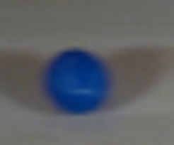
视觉工具实际返回图片 3
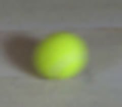
视觉工具实际返回图片 4
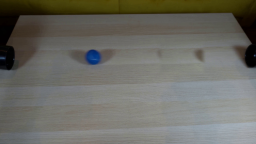
视觉工具实际返回图片 5
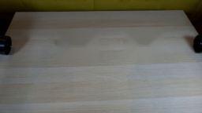
视觉工具实际返回图片 6
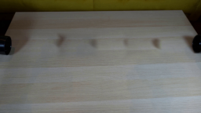
视觉工具实际返回图片 7

视觉工具实际返回图片 8
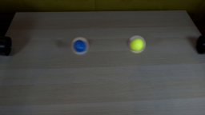
视觉工具实际返回图片 9

视觉工具实际返回图片 10
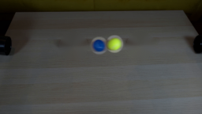
视觉工具实际返回图片 11
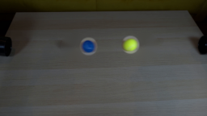
视觉工具实际返回图片 12
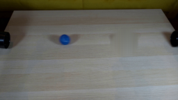
视觉工具实际返回图片 13
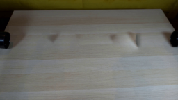
视觉工具实际返回图片 14
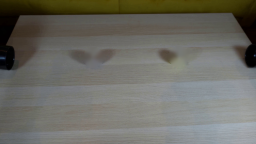
视觉工具实际返回图片 15
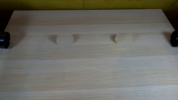
视觉工具实际返回图片 16
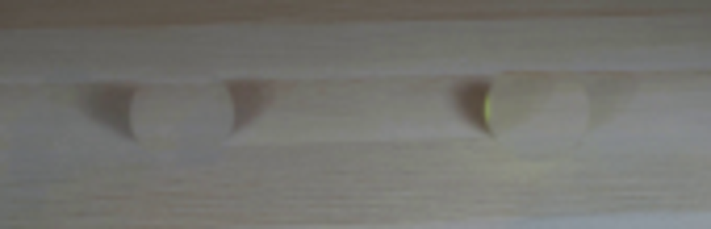
视觉工具实际返回图片 17
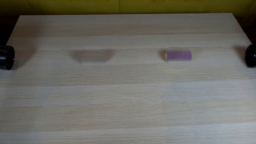
视觉工具实际返回图片 18
视觉工具实际返回图片 19
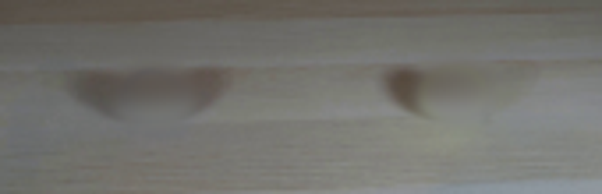
视觉工具实际返回图片 20
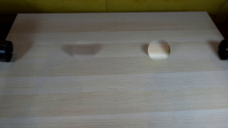
视觉工具实际返回图片 21
视觉工具实际返回图片 22
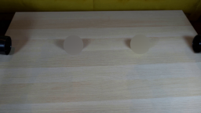
视觉工具实际返回图片 23
视觉工具实际返回图片 24
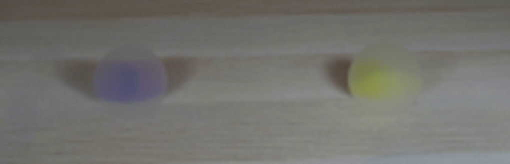
视觉工具实际返回图片 25
视觉工具实际返回图片 26
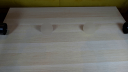
视觉工具实际返回图片 27
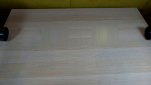
视觉工具实际返回图片 28
视觉工具实际返回图片 29
视觉工具实际返回图片 30
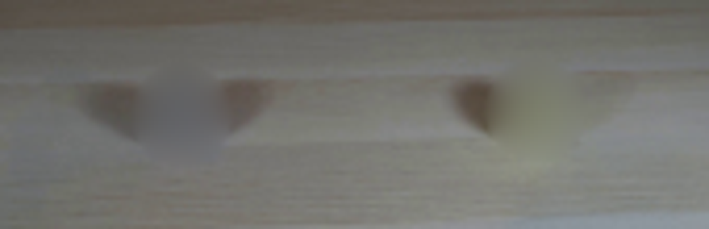
视觉工具实际返回图片 31
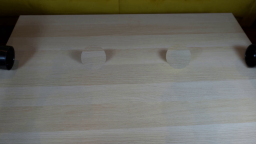
视觉工具实际返回图片 32
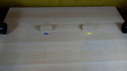
视觉工具实际返回图片 33
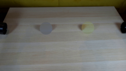
视觉工具实际返回图片 34
视觉工具实际返回图片 35
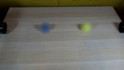
视觉工具实际返回图片 36
视觉工具实际返回图片 37
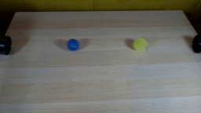
视觉工具实际返回图片 38
视觉工具实际返回图片 39
视觉工具实际返回图片 40
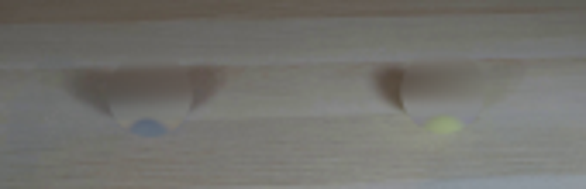
视觉工具实际返回图片 41
视觉工具实际返回图片 42
视觉工具实际返回图片 43
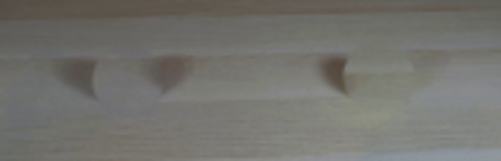
视觉工具实际返回图片 44
视觉工具实际返回图片 45
视觉工具实际返回图片 46
视觉工具实际返回图片 47
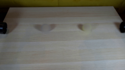
视觉工具实际返回图片 48
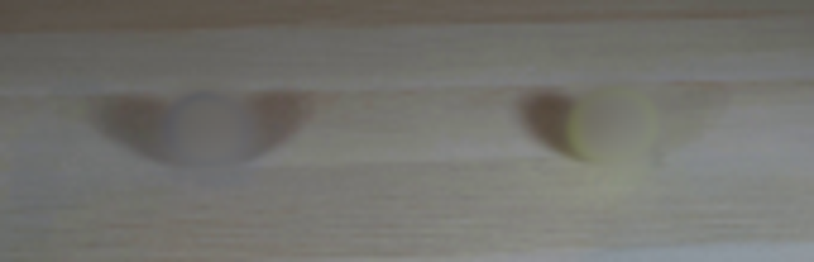
保存候选 1 份；完成命令 59 次；可验证图片返回 48 张。原始 API 响应与完整日志保留在本地。